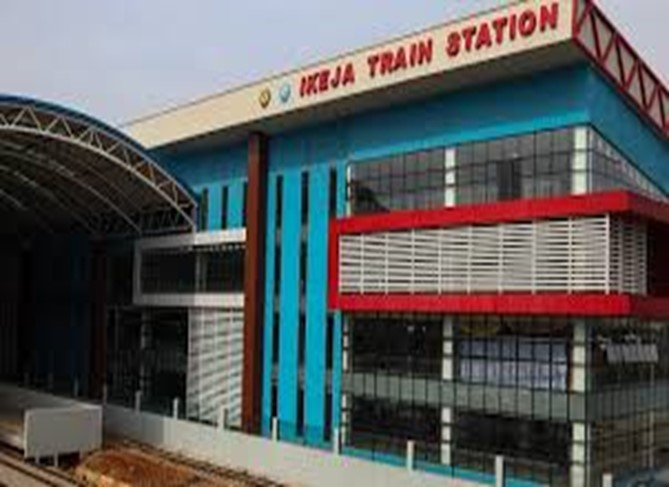
Prepared by: PUBLIC TRANSPORT – RAIL DEPARTMENT SECURITY & SURVEILLANCE UNIT
Date: August, 2025
Stations Covered: Agege, Ikeja, Oshodi, Mushin, Iju, Yaba, Oyingbo,
To routinely assess, monitor, and strengthen security measures across all Red Line stations by:
Comprehensive actions were taken and recommendations were made for immediate improvements
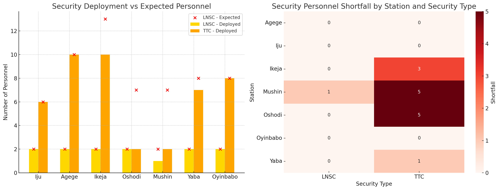
Summary of current TTC personnel deployment across all Red Line stations:
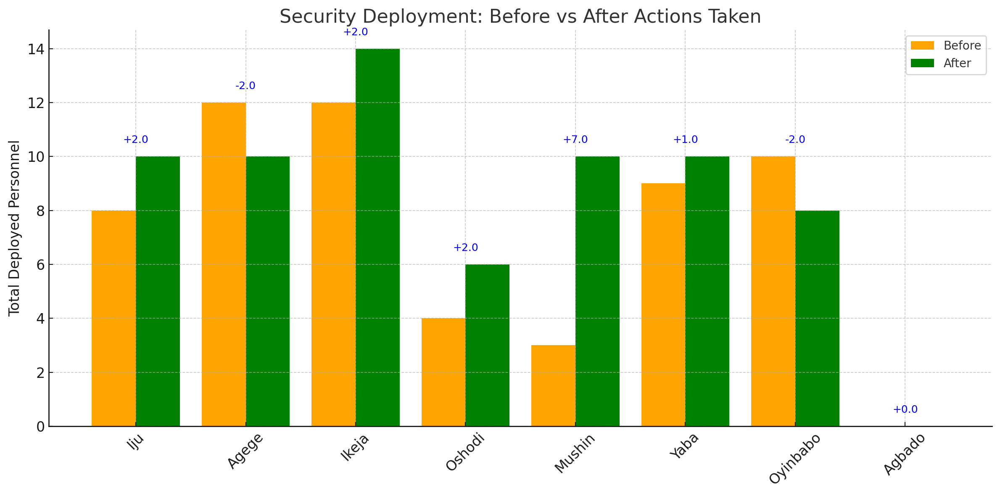
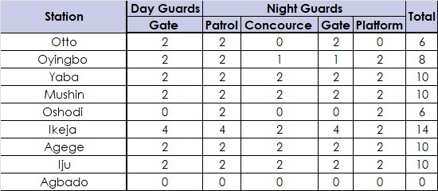
✅ Full deployment achieved, no personnel shortfall
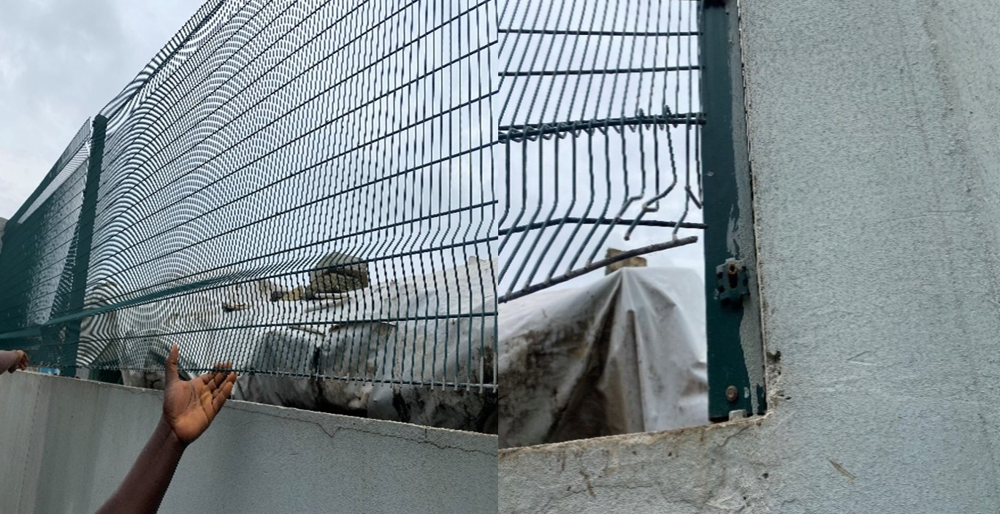
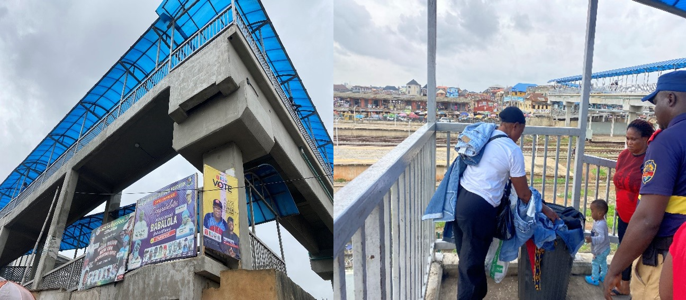
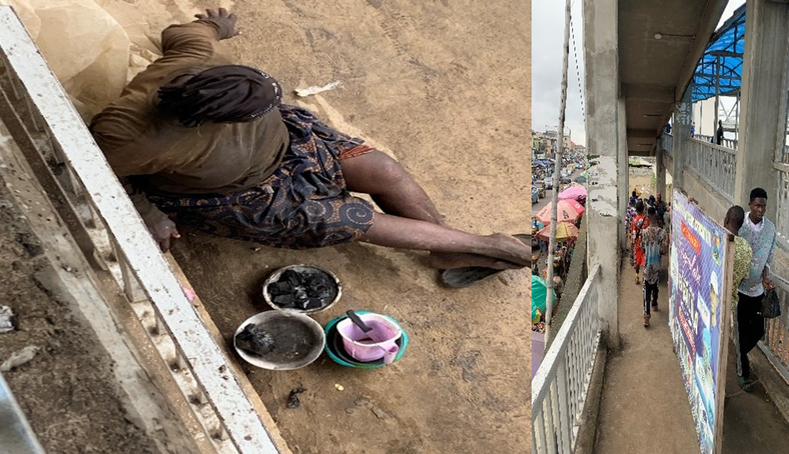
Recommendations:
• Provide shelter for security guards.
• Relocate or dismantle the CCECC shelter and reinforce the boundary wall.
• Enforce anti-hawking laws and reinforce walkway lighting.
• Refer the mentally ill woman to the nearest public health facility for psychiatric evaluation
• Deploy a trained Patrol Dog during late hours as an active deterrent
• Electrify the fence
• Install surveillance system to capture footage of offenders for identifivation and prosecution
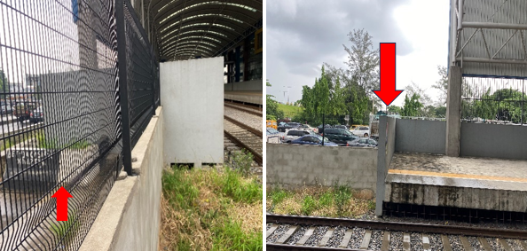
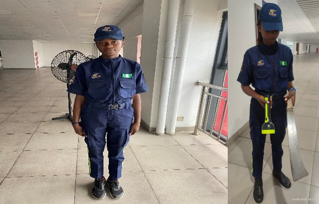
Guards equipped with necessary security tools to address challenges.
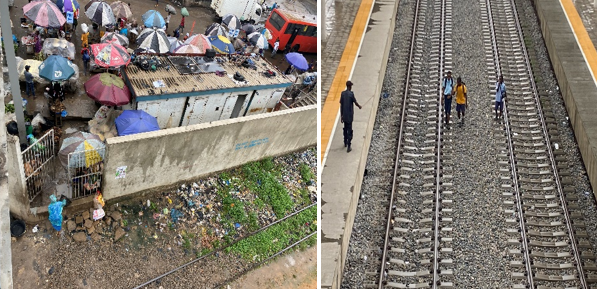
Unrestrained Pedestrian access across tracks as open gate allows free track access by Passersby
Recommendations:
• Increase LNSC deployment, particularly during peak hours and at night, with focus on platform security.
• Request police attachment for continuous law enforcement presence.
• Deploy additional night guards or shift existing manpower to bolster night coverage.
• Install surveillance cameras to monitor trackside access points and deter platform climbing.
• Improve perimeter fencing or install physical deterrents (spiked fencing, anti-climb panels) to reduce unauthorized entry from tracks.
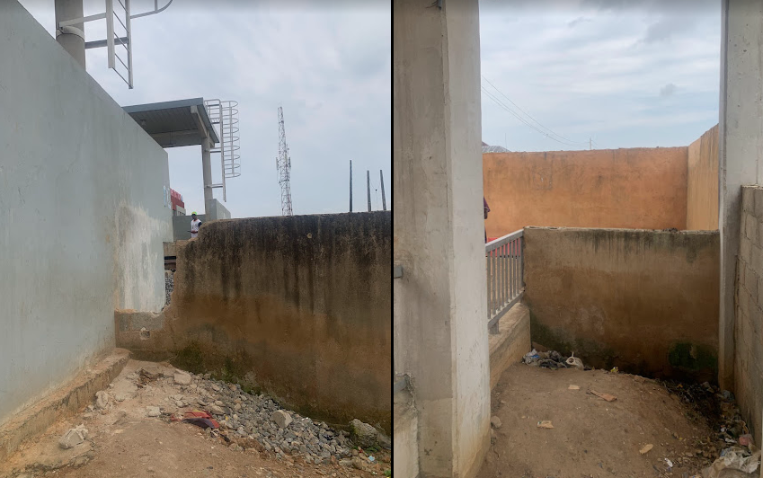
Identified Security Vulnerabilities – A deliberately broken fence section providing direct access to the property, and a low fence near the pedestrian bridge requiring elevation to prevent unauthorized entrY
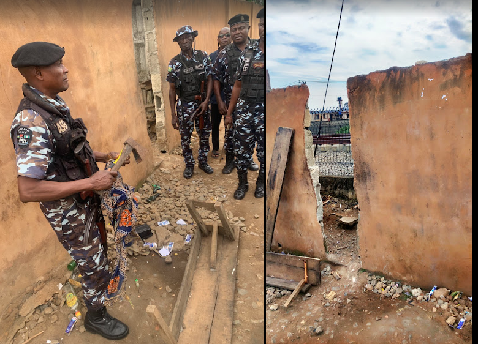
A deliberately broken fence section providing direct access to the property, and recovery of arms(axes)
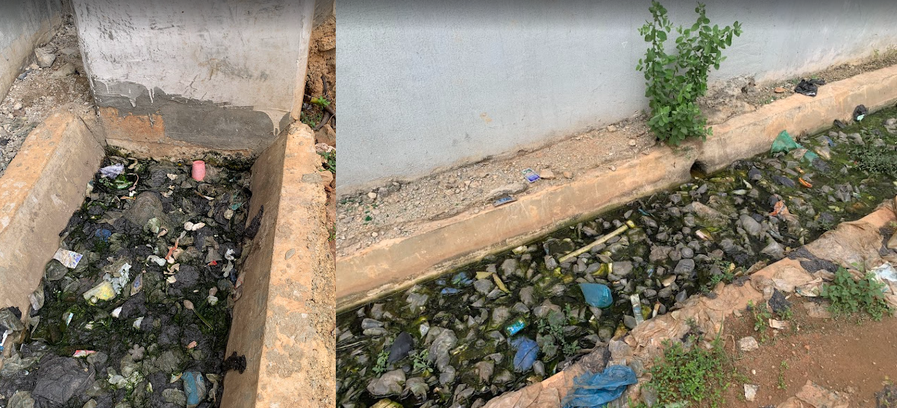
Obstructed Gutter Flow – Blockage caused by a constructed pillar, leading to stagnant water accumulation and potential structural damage
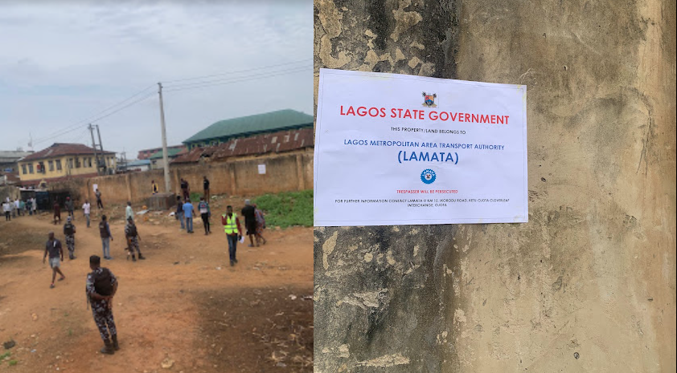
LAMATA enforcement signage displayed prominently on-site following eviction of illegal occupants at the Mushin Interchange Terminal.
Recommendations:
• Perimeter Reinforcement: Repair the broken fence sections and replace removed iron bars to prevent further unauthorized access to the platform.
• Elevation of the low fence near the pedestrian bridge to deter climbing and unauthorized access.
•
Strategic utilization of the land, such as converting it into a bus depot, to ensure consistent monitoring and lawful occupation.
• Drainage Diversion: Redirect the gutter away from the obstructing pillar to allow proper water flow and prevent structural weakening, mosquito breeding, and foul odor.
• Lighting Upgrade: Install adequate lighting on the pedestrian bridge to eliminate concealment opportunities for perpetrators.
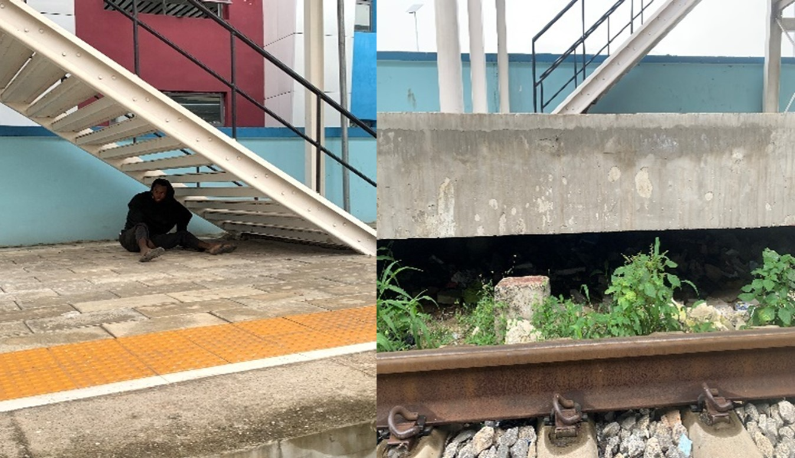
Platforms remain accessible from the track due to inadequate barrier systems.
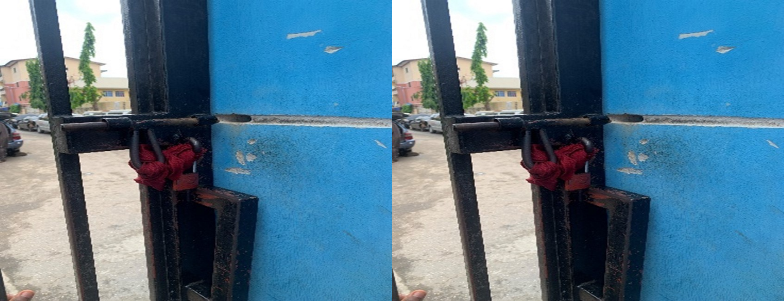
Worn-out padlocks on station gates
Recommendations:• Replace all padlocks with tamper-proof, high-security locks. • Provide standard security kits (batons, handcuffs, whistles, and flashlights) to each guard. • Strengthen the perimeter fencing and paste warning signage. • Supply portable two-way radios to improve coordination. • Increase night guard deployment to cover all entry points and platform edges. • Deploy police personnel for armed deterrence and incident response. • Install physical barriers to prevent platform access from tracks. • Install CCTV network to cover all approach points and integrate with central monitoring.
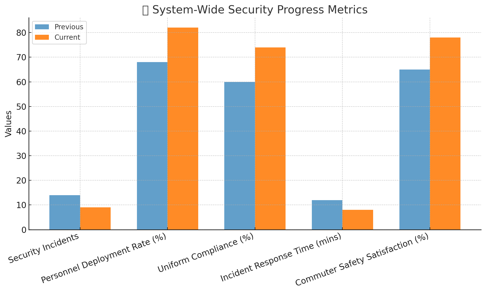
Security audit reveals critical areas for improvement in deployment, professionalism, and infrastructure
Next Steps: Continue monitoring and follow-up audits recommended within 30 days to track ongoing improvements